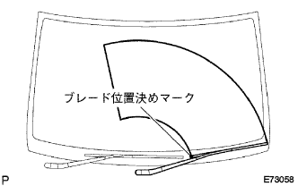

Front shock absorber W/coil spring installation |
| 1. Front shock absorber W/coil spring installation |
Front suspension support No.Attach 3 nuts via 2.
 |
Tighten the three nuts evenly and attach the front shock absorber w/coil spring.
 |
Insert two bolts from the front of the vehicle, tighten the front shock absorber W/coil spring and the steering knuckle with two nuts.
 |
Bolt, front brake Flexible hose No.1 And the speed sensor FR is attached to the front shock absorber W/coil spring.
| 2. Installation of front tires |
| 3. Cowl top panel OUT installation |
With 10 bolts, attach the cowl top panel OUT.
| 4. Wind shield wiplink Assisted |
 |
Wind shield wiperink ASSY is inserted into the pin with the windshield wipa motor ASSY.
With two bolts, attach a windshield wiperink Assy.
Connect the connector.
| 5. Cowl top ventilator louvor LH installation |
 |
Match the clip and eight claws and attach the cowl top ventilator LH LH.
| 6. Cowl top ventilator louvor RH installation |
 |
Found two clips and seven claws, and attach the cowl top ventilaarver RH.
| 7. Food toe cowl top seal installation |
 |
Six clips and attach the hood (hud) tsu cowl top seal.
| 8. Lord wiperarm RH installation |
 |
Clean the wire brush of the wire brush.
Clean the Wiper Arm Selation with a circle or crossing.(When re -assembling)
 |
Attach the front wiperarm RH with a nut so that the front wiper blade comes to the position in the figure.
| 9. Lord wiperarm LH installation |
Clean the wire brush of the wire brush.
Clean the Wiper Arm Selation with a circle or crossing.(When re -assembling)
|  |
Attach the front wiperarm LH with a nut so that the front wiper blade comes to the position in the figure.
The front wiper is activated while applying water or washer solution on the glass to confirm that it does not interfere with the blade dispatch status and the body.
| 10. Wind shield wiper arm cover mounting |
| 11. Front wheel alignment inspection / coordination |
reference)